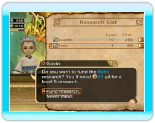

17 |
Soutien à la recherche |
 |
Les magasins destinés aux aventuriers (magasins d'armes, d'armures et d'objets) cherchent constamment à innover en matière d'équipement et d'objets. Vous pouvez les soutenir en consacrant une partie de vos gils à la recherche et améliorer ainsi l'efficacité de vos aventuriers.
D'autres structures, comme les temples des mages blancs, les académies des mages noirs et les salles d'entraînement mènent elles aussi des recherches sur de nouveaux sorts et aptitudes. En les soutenant financièrement, vous élargirez le répertoire de compétences de vos aventuriers. Vous pouvez financer plusieurs types de recherches : "swords" (épées), "daggers" (dagues), "restoration spells" (sorts de récupération) ou "fire spells" (sorts de feu). Les types de recherches disponibles peuvent varier en fonction du type et de l'emplacement des bâtiments construits dans le royaume. Lorsque la recherche atteint un certain niveau, les structures de recherche peuvent avoir besoin d'objets spécifiques, comme le "Restoration Magicite" (Magicite de Récupération). Ce type de matériau de recherche ne peut être trouvé qu'au plus profond des donjons. Seuls les aventuriers peuvent aller récupérer ces objets. Postez donc un ordre de mission pour les donjons contenant ces matériaux de recherche spécifiques, afin de pouvoir accéder aux résultats d'une recherche de haut niveau en matière d'armes, d'armures et de sorts. |
 |
 |
 |